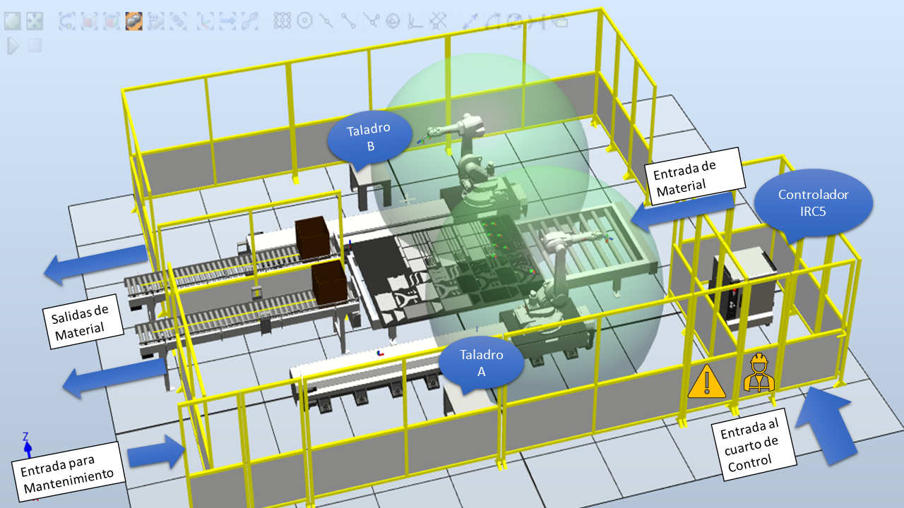

CELDA DE MANUFACTURA ROBOTIZADA
Para el creación de la celda de manufactura robotizada intentaremos seguir una secuencia de pasos que nos darán como resultado una propuesta aceptada de celda de manufactura lista para su construcción e implementación
Diagrama de flujo para la creación de una celda.
Orientación
Para este paso se consideron el objetivo y aspectos clave del proyecto con el fin de determinar el alcance y orientar el proyecto. Clasificando los distintos aspectos según su importancia se realizó un análisis para así identificar las dependencias responsables y ver cómo se podría dar solución de manera temprana para prevenir inconvenientes más adelante. La clasificación de importancia es la siguiente:
- "A - Abnormally Great"
- "E - Especially Significant"
- "I - Important"
- "O - Ordinary"
- "U - Uninportant"
Hoja de Trabajo, Orientación.
Clasificación
Dado que el enfoque principal de la celda es el de optimizar el proceso de taladrado, se clasificaron las piezas que requieren de este proceso y se identificaron aspectos como la cantidad de huecos y el numero de piezas por producto.
Tabla de clasificación de partes.
Análisis del Proceso
En la sección de Gestión de Producción
pudimos observar los requerimientos de los distintos procesos involucrados en la fabricación
de los productos, incluyendo por supuesto, aquellos que son de nuestro interés para el
diseño de la celda robotizada; osea corte láser y taladrado.
Se hizo el anáisis de los tiempos de proceso pre y pos automatización y se calcularon unos
indicadores (kpi), en los cuales podemos observar valores significativamente bajos. Esto
nos indica la gran necesidad del automatizar el proceso.
El proceso de empacado requiere que el trabajador empaque todos los materiales necesarios para que el usuario arme el
mueble. Esto incluye las piezas de madera (50 segundos por producto), los tubos metálicos cortados (30 segundos para la
bandeja, 20 segundos para el soporte, 10 segundos para la mesa), los tarugos y tornillos que se empacan junto al pegante
en una bolsa (30 segundos por producto). También se suman por producto 90 segundos que tarda el operario sellando cada
caja. El setup time se establece en 60 segundos y corresponde al tiempo en que el operario prepara la caja y las partes,
y el recovery time es de tan solo 15 segundos, pues es el tiempo en el que el operario desplaza las cajas para dar
espacio a la siguiente operación de empacado.
Bandeja:
Tiempo de empacado: 50 + 30 + 30 + 90 = 200 segundos
Tiempo de ciclo: 200 segundos
Tiempo de setup: 60 segundos
Tiempo de recuperación: 15 segundos
No. Operarios: 1
No. Maquinas: 0
Soporte:
Tiempo de empacado: 50 + 20 + 30 + 90 = 190 segundos
Tiempo de ciclo: 190 segundos
Tiempo de setup: 60 segundos
Tiempo de recuperación: 15 segundos
No. Operarios: 1
No. Maquinas: 0
Mesa:
Tiempo de empacado: 50 + 10 + 30 + 90 = 180 segundos
Tiempo de ciclo: 180 segundos
Tiempo de setup: 60 segundos
Tiempo de recuperación: 15 segundos
No. Operarios: 1
No. Maquinas: 0
El proceso de empacado es manual y no se requiere realizar mantenimiento a ninguna máquina. Por lo anterior, se
considera una disponibilidad del 100%.
El taladrado ocupa 6 segundos por cada agujero. A esto se le suma por cada agujero 20 segundos de medición y marcación,
y 10 segundos de manipulación de la herramienta (taladro). También se considera que se cambia dos veces la broca, en lo
cual el operario tarda 45 segundos cada vez. La cantidad aproximada de agujeros por producto es de 58. Se supone un
tiempo de setup de 120 segundos en el que se conecta el taladro y se ajusta la broca, así como un tiempo de recuperación
de 20 segundos, en el que se desconecta la herramienta.
Tiempo de taladrado: 6*58 = 348 segundos
Th: 20 * 58 = 1160 segundos
Tth: 10*58 + 2*45 = 670 segundos
Tiempo de ciclo: 2178 segundos
Tiempo de setup: 120 segundos
Tiempo de recuperación: 20 segundos
No. Operarios: 1
No. Maquinas: 1
El mantenimiento del taladro se realiza cada 100 horas de uso, y tarda aproximadamente una hora (limpieza y
lubricación):
MTBF: 360000 segundos
MTTR: 3600 segundos
Disponibilidad: 99.0%
Análisis de procesos.
Alternativas
Se plantearón dos alternativas diferentes para la celda robotizada. En ambos casos los procesos son los mismos y la única diferencia es la distribución espacial de la planta y la celda.
Alternativas de distribución de la planta y la celda.
Selección
Se realizó el análisis presente en el siguiente archivo para seleccionar la alternativa más adecuada para la celda.
Análisis de selección de alternativas.
Se determinó que la mejor altermativa es la B, cumpliendo favorablemente los criterios recien presentados y además, debido a que requerimos una alta producción con una cantidad moderada de piezas, la mejor opción es una celda tipo linea de producción.
Diseño de La Celda.
Se tuvo en cuenta un área de 6.6mx8.5m para la celda y todos sus componentes. Los celda está enjaulada utilizando rejas de al menos 1.8m de alto y con agujeros que permitan máximo el paso de dedos. Se cuenta con un acceso a un cuarto de control, donde se encontrará el controlador y algunas otras herramientas o indicadores que sirvan para operar o monitorear la celda. También se cuenta con una puerta que debe tener seguridad de apertura y cierre para poder entrar al espacio del robot y realizar tareas como destrabe o mantenimiento. La celda tiene una entrada de material por banda transportadora, la cual debe contar con la sensorica y restricciones fisicas pertinenetes para solo permitir el paso de las láminas de 12mm y las bandejas de 10mm sobre las que están apoyadas. También se tienen dos salidas de material, también por banda transportadora, las cuales tambien deben tener la sensorica y restricciones físicas de seguridad; estas bandas dan a una zona en la que un operario interactúa directamente con ellas mediante el recibimiento de las cajas de los productos ya empacados y proveyendo una nueva caja vacía al sistema. A continuación podemos ver algunas imágenes en las que se representa la celda y sus distintos componentes.

Imágen de la celda diseñada en RobotStudio.
Imágen de la celda diseñada en RobotStudio.
Selección del Robot
Para la selección del robot, buscamos el robot por medio de la ayuda del aplicativo Robot Selector de ABB. Allí se colocaron los datos de requerimientos del robot, como por ejemplo aplicación, capacidad de carga y alcance. Nos apareció una lista de robots que podrían cumplir con la tarea, por lo cuál nos guiámos más de el alcance, ya que era uno de nuestros requerimientos más importantes. Luego de filtrar de esta manera nos quedaron 2 opciones, el IRB 1600 y el IRB 1300; nos decantamos por el 1600 ya que este cuenta con más alcance. Una vez seleccionado pasamos a revisar su manual y corroborar que la carga que íbamos a manejar si podía ser soportada por el robot. Observando las tablas se determinó en todos los casos que para la distancia a la que se sujetarían las piezas, que es 120mm, siempre y cuando estén sujetadas cerca a su centro de gravedad, el robot puede moverlas con su máxima capacidad, 6kg.
Análisis y Justificación
Una vez ya culminados todos los pasos descritos anteriormente se toma el tiempo de producción de la celda, dando 672 segundos por lamida de MDF, la cual tiene en ella la cantidad de piezas para realizar 12 productos, de allí podemos sacar que se demora 56 segundos por producto, eso en contraste al tiempo de los 2178 segundos que se demoraba manualmente un operario en realizar todos los agujeros de un producto representa una mejora del 97% en el tiempo de producción. Ahora mirando ya los costos de la celda, nos da que el costo incluido los materiales, equipos, instalación y prueba de la celda es de 250 millones de pesos, teniendo que remover por lo menos a 2 operarios. Con estos sacamos el KPI ROI de nuestra celda la cual nos da:
Imágen obtenida usando la herrmaienta ROI calculator.
Lo cual nos demuestra que el uso de la celda robotizada ahorra mucho dinero y mejora mucho la productividad.
Simulación en RobotStudio
Utilizando el software ABB RobotStudio se creo una estación con los dos robots seleccionados y rieles de avance lineal de 4 metros de largo. El controlador usado fue el IRC5, para el cual se creó un sistema en el programa y se configuraron algunas opciones requeridas para los movimientos y para las comunicaciones con Ignition. También se añadieron algunos componentes físicos adicionales en la estación, tales como conveyors, paneles de separación, las mesas de taladrado y cajas. La Simulación contruida consiste en que a la celda llega, por medio de un conveyor, la lámina cortada a láser ya pintada. Los robots empiezan a tomar las piezas a ambos costados de la lámina utilizando herramientas de succión tipo ventosa o similar, y las llevan hacia las mesas de taladrado, si la pieza lo requiere, y luego las empacan en cajas. Cuando se ha completado una caja con un producto, ésta se empieza a mover y sale de la estacón a través del conveyor.

Fragmento de la Simulación en RS.